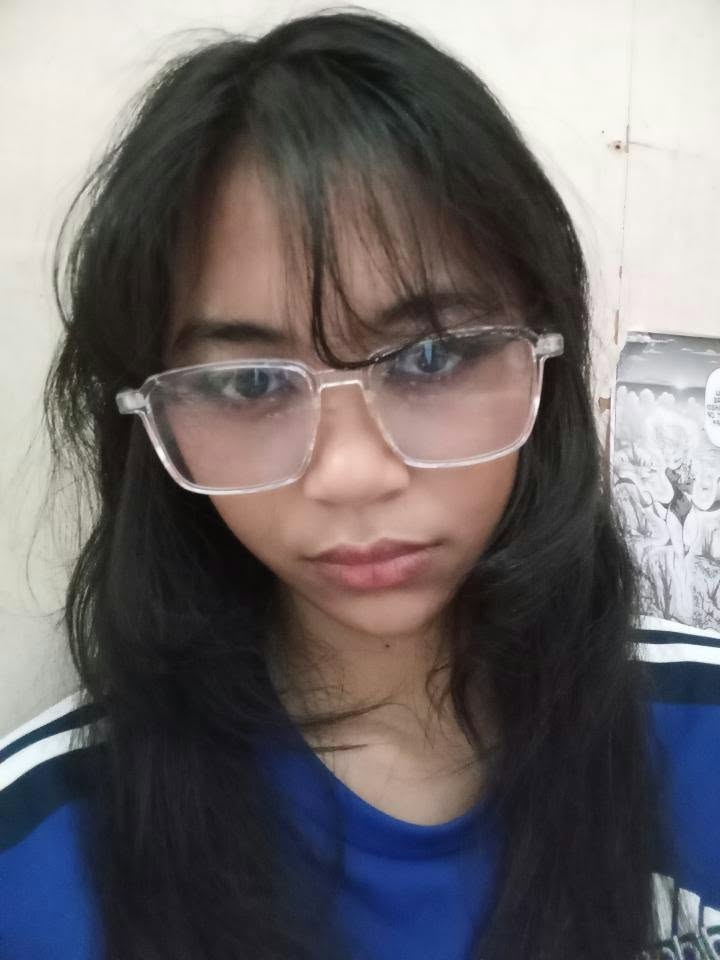
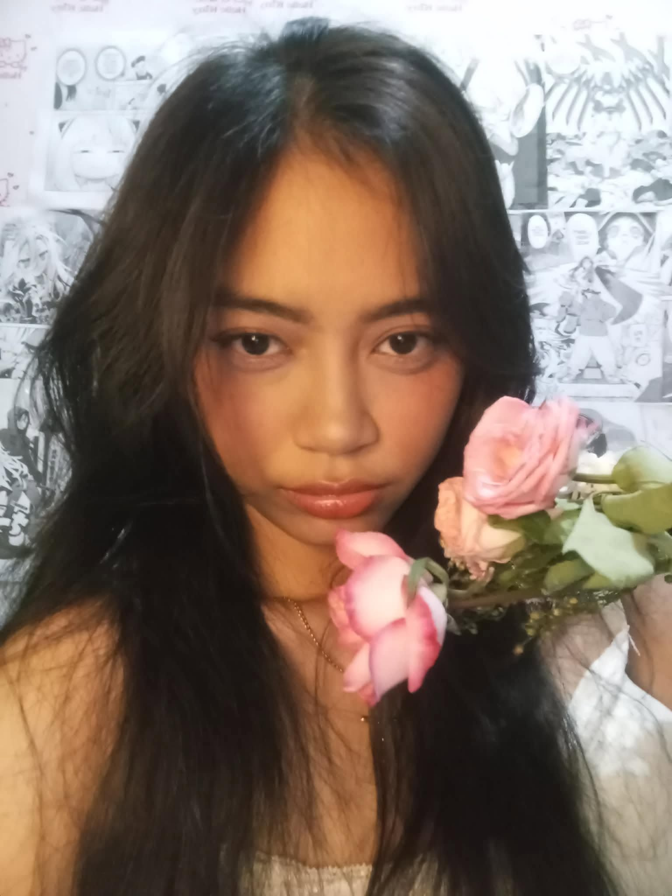
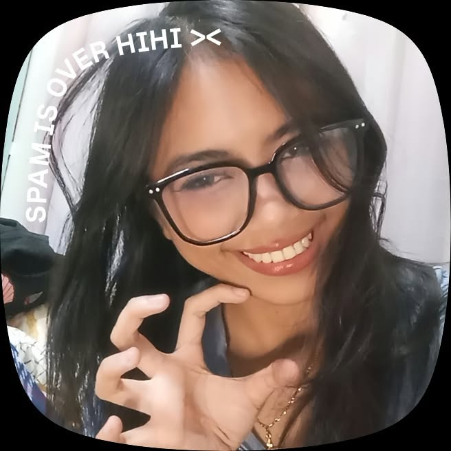

I commented on your threads because I was concerned for your health, and I didnt expect what would happen next because I thought it was just another everyday thing for me, but you sent me a follow in instagram and I followed back...
The day I replied to your notes. When you suddenly said, "take a chance," I was honestly so shocked that I didn't even know what to say. It caught me completely off guard! I was having so much fun talking to you, especially with all the little hints you kept giving me. And there I was, intentionally acting oblivious because I didn't want to assume anything or get my hopes up. Little did I know, you were practically giving me the chance I needed. Eventually, I decided to take that chance, and I'm so glad I did because it led me to confess my feelings for you. Looking back, it's funny how something as simple as replying to your notes became the beginning of our love story. One little conversation turned into something I never knew would mean this much to me. And now, here we are, celebrating our first year together. I'm grateful that I didn't let that chance pass me by, because taking that leap brought me to the person I now get to call my love, my bunny, and my favorite person.
I still remember the day I confessed my feelings to you. You were surprised by how long my confession was, but you never complained. Instead, you told me that you couldn't get enough of me. That moment has always stayed in my heart because, without even realizing it, that was the beginning of something beautiful between us. It was the start of our journey, the beginning of countless memories, and the moment that led us to where we are today. Looking back, I'm so glad I gathered the courage to tell you how I felt. Imagine if I had kept all those words to myself? We might not have experienced everything we've shared together. I'm thankful that I took that chance because it eventually led me to you, and I wouldn't trade that decision for anything.
I still remember sending you that little letter where I called you my bunny. Seeing how much you loved it and how you reacted made me genuinely happy. I loved your reaction more than you probably realize. It made me feel like even the simplest words from me could make you smile, and that's something I'll always treasure. I know we didn't get to celebrate our anniversary in a grand or special way. We mostly just spent the day playing games together, but honestly, I wouldn't trade those moments for anything. Maybe it wasn't the kind of celebration people would expect for a first anniversary, but having you there made it special enough for me. I really hope you enjoyed the day as much as I did because, even without anything extravagant, being able to spend that time with you was already a gift.
I can't believe that it's already been a year since we started this beautiful and fun journey together. One whole year of loving you, making memories, sharing fun time, overcoming misunderstandings, and learning more about each other. It may only be our first year, but it holds so many memories that I will cherish for the rest of my life. I want to thank you for choosing me every single day. Thank you for your patience, understanding, love, and for staying by my side even during the moments when things aren't always easy. I know I'm not a perfect boyfriend and I know you hate it when I say that, and there are times when I make mistakes, but I hope you never doubt how much I love you and how important you are to me. You have become such a special part of my life. You make ordinary days feel extraordinary, and even the simplest moments become memorable when I'm with you. Your smile, your laugh, your presence, and even the little things you do make me fall in love with you over and over again. Throughout this year, we've experienced both beautiful and difficult moments. We may not always agree on everything, and there may be days when we struggle to understand each other, but I hope we never stop choosing to work things out. I don't want a relationship that is only beautiful when everything is going well. I want a love that remains strong even when life gets difficult. I want us to grow, mature, and become better people together. As we celebrate our first anniversary, I want you to know that this is only the beginning. I still have so many memories to make with you, places to visit, dreams to achieve, and countless moments to share. I look forward to celebrating more anniversaries, experiencing new adventures, and growing old with you. If I could go back to the day we started, I would still choose you. I would choose to meet you, get to know you, fall in love with you more, and take this journey all over again. Because out of all the people I could have met, I'm grateful that life brought me to you. Believe me or not I prayed to have a girl that is Sweet, Kind, Understanding, Caring, Loving, Cosplayer, Gamer and Beautiful and I found all of that in you. God definitely made us to mett that's why I am so lucky to have you in my life, and I promise to always cherish and love you with all my heart. I love you more than words can fully express. Thank you for making my first year of loving you so meaningful. Here's to our first year, and to all the years that are yet to come. Happy First Anniversary, my love!



My dearest Abbie Jeanne Caperocho,
# To My Bunny, My Love, ❤️ Happy First Anniversary, my love! One year. Can you believe it? We've officially spent an entire year together, and honestly, I still find it amazing how we got here. Sometimes I look back at how everything started, and I can't help but smile because who would've thought that a simple conversation, a few notes, little hints, and one unexpected "take a chance" would eventually lead us to this beautiful journey together? I want to take this opportunity to tell you everything that I sometimes struggle to put into words. Not just the usual I love yous, but the things I've kept in my heart, the memories I constantly look back on, and the reasons why I'm so grateful that I get to spend my days with you. I still remember the day I replied to your notes. I remember how we started talking and how much fun I was having getting to know you. You kept giving me hints, and there I was, intentionally acting oblivious because I didn't want to assume anything. I was enjoying every little conversation we had, but at the same time, I was afraid of misunderstanding things or getting ahead of myself. Then suddenly, you said, "take a chance." I swear, I was so shocked. I didn't even know what to say because it was so unexpected. I wasn't prepared for you to say something like that, and for a moment, I genuinely didn't know how to react. But looking back, I'm glad you said those words, and I'm even happier that I decided to take that chance. And that chance eventually led me to confess my feelings to you. I still remember the day I confessed. You were surprised by how long my confession was, and honestly, I don't blame you. I had so many things I wanted to tell you, so many feelings I wanted you to understand, and perhaps I just couldn't find a shorter way to express everything that was going through my mind. But what I remember most is that you weren't complaining. Instead, you told me that you couldn't get enough of me. Do you know how happy that made me? I don't think you realize how much that moment meant to me. It was such a simple response, but it made me feel that all those words I had written were worth it. That was the beginning of our journey, the moment when everything started becoming something more than just conversations. And if I could go back to that day, I would still write every single word all over again. Fast forward to today, and here we are, celebrating our first anniversary. A whole year of being together, learning about each other, making memories, laughing, playing games, sharing stories, and experiencing things that have brought us closer. I also want to bring up that little letter I sent you, the one where I called you my bunny. I remember how much you loved it because if I still remember you told me you love that nick name Bunny, and I genuinely loved your reaction. Seeing you appreciate something I made specifically for you made me incredibly happy. I don't know how to explain it, but there's something special about seeing the person you love get excited over something that came from your heart. Your reaction alone made writing that letter even more worthwhile. I hope you know that whenever I call you bunny, it comes with so much affection and love. And about our monthsarry celebrations, I know we didn't really celebrate much. We mostly just played games together, and perhaps it wasn't the grand celebration that some people would expect for a monthsarries. But honestly, I still enjoyed it. I had fun simply spending the day with you. I hope you loved the day as much as I did because I genuinely wanted you to enjoy our special day, even if we didn't do anything extravagant. I guess that's one of the things I've learned throughout our relationship. It doesn't always have to be about grand gestures, expensive gifts, or elaborate celebrations. Sometimes, it's just about having you around, hearing from you, laughing together, playing games, and knowing that somewhere in the middle of your day, there's someone who loves you and wants to spend time with you. Those little moments might seem ordinary, but they're the ones I find myself appreciating the most. Of course, I won't pretend that everything has been perfect. We've had our own moments, misunderstandings, and times when things weren't as easy as we wanted them to be. We're two different people, after all, and we're still learning how to understand each other better. I know I have my shortcomings, and I know there are times when I could have handled things differently. I may not always say the right things, understand everything immediately, or express my feelings in the best way possible. But I hope you know that I'm always willing to learn. I don't want you to feel like you have to settle for the bare minimum. I want to keep improving, not because I feel obligated to, but because I genuinely want to give you the kind of love you deserve. I want to become someone you can comfortably talk to, someone you can depend on, someone who listens to you, and someone who makes you feel appreciated even on the days when you don't feel your best. I want to be there for your achievements, your frustrations, your random stories, your little rants, and even those moments when you don't really feel like talking. I want to know about the little things that happen in your day, even the things you think aren't worth mentioning. I want to celebrate your victories with you and remind you that you're not alone when things become difficult. Most importantly, I want us to continue choosing each other. I know that one year is only the beginning, but I want you to remember this. We still have so much to experience and discover together. There are still countless memories waiting to be made, games waiting to be played, places waiting to be visited, and milestones waiting to be celebrated. I look forward to all of them, even the simplest and most ordinary days. I hope that as time passes, we never lose the excitement of getting to know each other. I hope we never stop making each other laugh, sending random messages, sharing little things, and finding reasons to appreciate one another. I hope that even when we're busy with our own responsibilities, we continue making time for each other. And if there is one thing I want you to remember, it's that I'm genuinely happy that I took that chance. Imagine if I had ignored those hints. Imagine if I hadn't replied to your notes, or if I had allowed my fear of assuming things to stop me from confessing. We might not have reached this point. I might not have experienced what it's like to love you, to call you mine, to have you as my favorite person, and to celebrate a whole year of being together. I'm glad I didn't let that opportunity pass. Thank you for coming into my life. Thank you for entertaining my long messages, for appreciating my letters, for making me smile, and for giving me memories that I can look back on with so much happiness. Thank you for being part of my days and for allowing me to be part of yours. Thank you for the love you've given me and for all the little things you do that might seem insignificant to you but mean so much to me. I may not be able to promise that every day will be perfect, but I can promise that I want to keep putting effort into us. I want to keep understanding you, supporting you, growing with you, and loving you in ways that make you feel secure and appreciated. I don't just want to celebrate our first anniversary. I want to be here for our second, third, fourth, and hopefully many more anniversaries after that. I want to create a lifetime of memories with you, one little moment at a time. And lastly, my bunny, I hope you never get tired of my long letters, because I don't think I'll ever run out of things to say about you. I still have so many words left, so many feelings to express, and so many reasons to remind you how much you mean to me. If I were given the chance to go back and experience everything again, from replying to your notes to confessing my feelings and eventually becoming your boyfriend, I would take that same chance without hesitation. Because it led me to you. Happy First Anniversary, my love. Here's to the first year of our story and to all the chapters we have yet to write together. I love you, my bunny. More than I can fit into a single letter, even one as long as this. One year down, and I would still choose you all over again.
Forever yours, Weiwei